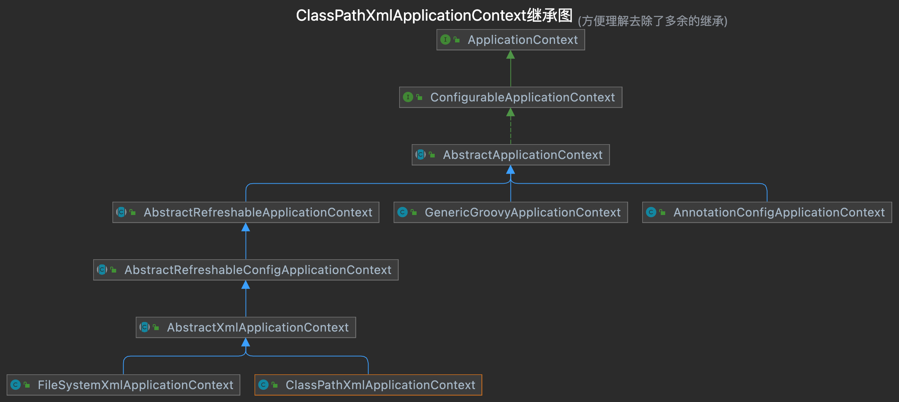
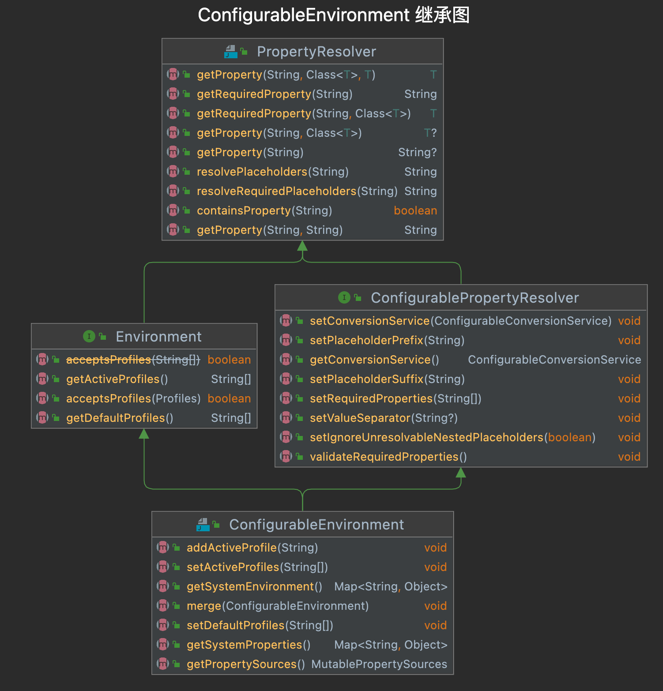
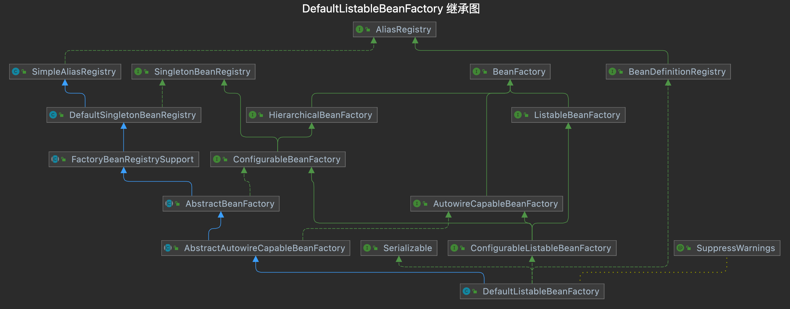
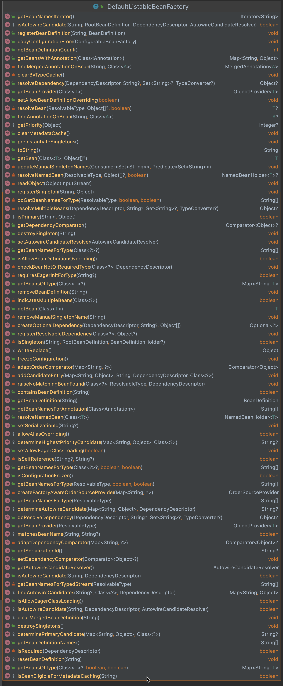
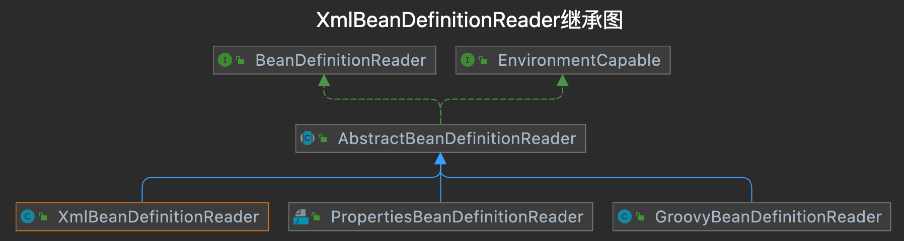

POM
1<dependencies>2 <dependency>3 <groupId>org.springframework</groupId>4 <artifactId>spring-context</artifactId>5 <version>5.0.0.RELEASE</version>6 </dependency>7</dependencies>简单的接口和实现类
x1public interface IOCService {2 public String hollo();3}4
5public class IOCServiceImpl implements IOCService {6 public String hollo() {7 return "Hello，IOC";8 }9}application-ioc.xml
71 2<beans xmlns:xsi="http://www.w3.org/2001/XMLSchema-instance"3 xmlns="http://www.springframework.org/schema/beans"4 xsi:schemaLocation="http://www.springframework.org/schema/beans http://www.springframework.org/schema/beans/spring-beans.xsd" default-autowire="byName">5
6 <bean id="iocservice" class="cn.shiyujun.service.impl.IOCServiceImpl"/>7</beans>启动代码
121public class IOCDemo {2 public static void main (String args[]){3 // 创建上下文 4 ApplicationContext context = new ClassPathXmlApplicationContext("classpath:application-ioc.xml");5 6 // 从上下文中获取到接口7 IOCService iocService=context.getBean(IOCService.class);8 9 // 打印10 System.out.println(iocService.hollo());11 }12}
11在Demo中我们使用了xml文件栏配置了接口和实现类，然后使用`ClassPathXmlApplicationContext`这个类来加载这个配置文件.
介绍：从上边的继承图看，旁边还有个兄弟FilSystemXmlApplicationContext，从名字上看这俩都是通过加载配置
文件来启动Spring，只不过一个是程序内加载一个从系统内部加载。
除了这2个类之外还有个ApplicationConfigApplicationContext，属于注解编程，最上边就是ApplicationContext Spring最核心的上下文。
261public class ClassPathXmlApplicationContext extends AbstractXmlApplicationContext {2 3 //配置文件数组4 private Resource[] configResources;5
6 // 指定ApplicationContext的父容器7 public ClassPathXmlApplicationContext(ApplicationContext parent) {8 super(parent);9 }10 11 public ClassPathXmlApplicationContext(String[] configLocations，boolean refresh，ApplicationContext parent) throws BeansException {12
13 super(parent);14 15 // 根据提供的路径，处理成配置文件数组(以分号;逗号;空格;tab;换行符分割)16 setConfigLocations(configLocations);17 18 // 刷新容器19 if (refresh) {20 refresh();21 }22 }23}24
25解释: 整体的源码还是比较简单，只是setConfigLocations和refresh两个方法没有看到具体的实现，接下来我们26来看下具体实现。介绍: setConfigLocations方法主要工作2个，创建环境对象ConfigurablEnvironment和处理ClassPathXml Application传入的字符串占位符。
251public void setConfigLocations(String... locations) {2 if (locations != null) {3 Assert.noNullElements(locations，"Config locations must not be null");4 this.configLocations = new String[locations.length];5 for (int i = 0; i < locations.length; i++) {6 //往下看7 this.configLocations[i] = resolvePath(locations[i]).trim();8 }9 }10 else {11 this.configLocations = null;12 }13}14
15protected String resolvePath(String path) {16 return getEnironment().resolveRequiredPlaceholders(path);17}18
19// 解释: getEnvironment()就设计到创建环境变量相关的操作，"获取环境变量"20public ConfigurableEnvironment getEnvironment() {21 if (this.environment == null) {22 this.environment = createEnvironment();23 }24 return this.environment;25}ConfigurableEnvironment继承图

这个接口比较重要就是2部分内容，1个是设置Spring的环境就是我们经常用的spring.profile配置,另外1个就是系统资源的Property。
接着看createEnvironment()方法，发现它返回了一个StandardEnvironment类，而这个类中的customizePropertySources方法就会往资源列表中添加Java进程中的变量和系统环境变量。
51// StandardEnvironment中的方法2protected void customizePropertySources(MutablePropertySources propertySources) {3 propertySources.addLast(new MapPropertySource(SYSTEM_PROPERTIES_PROPERTY_SOURCE_NAME，getSystemProperties()));4 propertySources.addLast(new SystemEnvironmentPropertySource(SYSTEM_ENVIRONMENT_PROPERTY_SOURCE_NAME，getSystemEnvironment()));5}处理占位符
获取到环境那之后，调用ConfigurableEnvironment#resolveRequiredPlaceholders方法，处理所有使用${}方式的占位符。
691/**2 * PropertyPlaceholderHelper中的方法3 * 主要处理占位符4 */5protected String parseStringValue(6 String value，PlaceholderResolver placeholderResolver， Set<String> visitedPlaceholders) {7
8 int startIndex = value.indexOf(this.placeholderPrefix);9 if (startIndex == -1) {10 return value;11 }12
13 StringBuilder result = new StringBuilder(value);14 while (startIndex != -1) {15 int endIndex = findPlaceholderEndIndex(result，startIndex);16 if (endIndex != -1) {17 String placeholder = result.substring(startIndex + this.placeholderPrefix.length()，endIndex);18 String originalPlaceholder = placeholder;19 if (visitedPlaceholders == null) {20 visitedPlaceholders = new HashSet<>(4);21 }22 if (!visitedPlaceholders.add(originalPlaceholder)) {23 throw new IllegalArgumentException(24 "Circular placeholder reference '" + originalPlaceholder + "' in property definitions");25 }26 // 获取占位符中的值27 // Recursive invocation，parsing placeholders contained in the placeholder key.28 placeholder = parseStringValue(placeholder，placeholderResolver，visitedPlaceholders);29 30 // 解析占位符31 // Now obtain the value for the fully resolved key...32 String propVal = placeholderResolver.resolvePlaceholder(placeholder);33 if (propVal == null && this.valueSeparator != null) {34 int separatorIndex = placeholder.indexOf(this.valueSeparator);35 if (separatorIndex != -1) {36 String actualPlaceholder = placeholder.substring(0，separatorIndex);37 String defaultValue = placeholder.substring(separatorIndex + this.valueSeparator.length());38 propVal = placeholderResolver.resolvePlaceholder(actualPlaceholder);39 if (propVal == null) {40 propVal = defaultValue;41 }42 }43 }44 if (propVal != null) {45 // Recursive invocation，parsing placeholders contained in the46 // previously resolved placeholder value.47 propVal = parseStringValue(propVal，placeholderResolver，visitedPlaceholders);48 result.replace(startIndex，endIndex + this.placeholderSuffix.length()，propVal);49 if (logger.isTraceEnabled()) {50 logger.trace("Resolved placeholder '" + placeholder + "'");51 }52 startIndex = result.indexOf(this.placeholderPrefix，startIndex + propVal.length());53 }54 else if (this.ignoreUnresolvablePlaceholders) {55 // Proceed with unprocessed value.56 startIndex = result.indexOf(this.placeholderPrefix，endIndex + this.placeholderSuffix.length());57 }58 else {59 throw new IllegalArgumentException("Could not resolve placeholder '" +60 placeholder + "'" + " in value \"" + value + "\"");61 }62 visitedPlaceholders.remove(originalPlaceholder);63 }64 else {65 startIndex = -1;66 }67 }68 return result.toString();69} 配置文件名称解析完毕之后，最关键一步就是refresh刷新容器比较重要。
681public void refresh() throws BeansException，IllegalStateException {2 3 //第1步：添加锁4 synchronized (this.startupShutdownMonitor) {5 // 第2步：准备容器参数6 // Prepare this context for refreshing.7 prepareRefresh();8
9 // 第3步：初始化BeanFactory和Bean的加载10 // Tell the subclass to refresh the internal bean factory.11 ConfigurableListableBeanFactory beanFactory = obtainFreshBeanFactory();12
13 // 第4步：准备BeanFactory14 // Prepare the bean factory for use in this context.15 prepareBeanFactory(beanFactory);16
17 try {18 // Allows post-processing of the bean factory in context subclasses.19 postProcessBeanFactory(beanFactory);20
21 // Invoke factory processors registered as beans in the context.22 invokeBeanFactoryPostProcessors(beanFactory);23
24 // Register bean processors that intercept bean creation.25 registerBeanPostProcessors(beanFactory);26
27 // Initialize message source for this context.28 initMessageSource();29
30 // Initialize event multicaster for this context.31 initApplicationEventMulticaster();32
33 // Initialize other special beans in specific context subclasses.34 onRefresh();35
36 // Check for listener beans and register them.37 registerListeners();38
39 // Instantiate all remaining (non-lazy-init) singletons.40 finishBeanFactoryInitialization(beanFactory);41
42 // Last step: publish corresponding event.43 finishRefresh();44 }45
46 catch (BeansException ex) {47 if (logger.isWarnEnabled()) {48 logger.warn("Exception encountered during context initialization - " +49 "cancelling refresh attempt: " + ex);50 }51
52 // Destroy already created singletons to avoid dangling resources.53 destroyBeans();54
55 // Reset 'active' flag.56 cancelRefresh(ex);57
58 // Propagate exception to caller.59 throw ex;60 }61
62 finally {63 // Reset common introspection caches in Spring's core，since we64 // might not ever need metadata for singleton beans anymore...65 resetCommonCaches();66 }67 }68 } 为了refresh()没有结果，再次启动或者销毁容器引起的冲突添加了锁。 锁对象时通过饿汉加载的一个单例对象。
做一些准备工作，记录容器的启动时间、标记"已启动"状态、检查环境变量等。
171protected void prepareRefresh() {2 this.startupDate = System.currentTimeMillis();3 this.closed.set(false);4 this.active.set(true);5
6 if (logger.isInfoEnabled()) {7 logger.info("Refreshing " + this);8 }9
10 // 初始化加载配置文件方法，并没有具体实现，一个留给用户的扩展点.11 initPropertySources();12
13 // 检查环境变量14 getEnvironment().validateRequiredProperties();15
16 this.earlyApplicationEvents = new LinkedHashSet<>();17 } 其中检查环境变量核心的方法validateRequiredProperties，简单来说如果存在环境变量value为空的时候就会抛出异常，然后停止启动。
121// 校验环境变量2public void validateRequiredProperties() {3 MissingRequiredPropertiesException ex = new MissingRequiredPropertiesException();4 for (String key : this.requiredProperties) {5 if (this.getProperty(key) == null) {6 ex.addMissingRequiredProperty(key);7 }8 }9 if (!ex.getMissingRequiredProperties().isEmpty()) {10 throw ex;11 }12 } 基于这个特性我们也可以做一些扩展，提前在集合requiredProperties中放入我们这个项目中必须存在的换件变量，比如我们使用的数据库信息可以通过这种方式注入来进行配置，就可以加这个校验在程序启动时发现没有配置就会出问题。
这个方法主要是负责了BeanFactory的初始化、Bean的家在和注册等事件。
131
2protected ConfigurableListableBeanFactory obtainFreshBeanFactory() {3 4 // 核心5 refreshBeanFactory();6
7 // 返回刚刚创建的 BeanFactory8 ConfigurableListableBeanFactory beanFactory = getBeanFactory();9 if (logger.isDebugEnabled()) {10 logger.debug("Bean factory for " + getDisplayName() + ": " + beanFactory);11 }12 return beanFactory;13}先看refreshBeanFactory()方法。
261
2protected final void refreshBeanFactory() throws BeansException {3 // 判断当前ApplicationContext是否存在BeanFactory，如果存在的话就销毁所有Bean，关闭BeanFactory4 // 注意，一个应用可以存在多个BeanFactory，这里判断的是当前ApplicationContext是否存在BeanFactory5 if (hasBeanFactory()) {6 destroyBeans();7 closeBeanFactory();8 }9 try {10 // 初始化DefaultListableBeanFactory 设置id防止被GC回收11 DefaultListableBeanFactory beanFactory = createBeanFactory();12 beanFactory.setSerializationId(getId());13
14 // 设置BeanFactory的两个配置属性：是否允许Bean覆盖、是否允许循环引。15 customizeBeanFactory(beanFactory);16
17 // 加载Bean BeanFactory中18 loadBeanDefinitions(beanFactory);19 synchronized (this.beanFactoryMonitor) {20 this.beanFactory = beanFactory;21 }22 }23 catch (IOException ex) {24 throw new ApplicationContextException("I/O error parsing bean definition source for " + getDisplayName(), ex);25 }26}这里一开始就实例化了一个DefaultListableBeanFactory，先看一下这个类的继承关系。

可以看到这个类几乎覆盖了关于容器的所有接口、抽象类他都继承了。看看他的方法，这个类方法多的吓人，继承了容器的大部分的方法。

在看loadBeanDefinitions()这个方法之前，就必须了解BeanDefinition。
我们知道BeanFactory是一个Bean容器，而BeanDefinition就是Bean的一种形式，它包含Bean指向的类、是否是单例、Bean的依赖关系等属性。BeanFactory中保存的就是BeanDefinition。
看BeanDefinition接口定义。
781
2public interface BeanDefinition extends AttributeAccessor, BeanMetadataElement {3
4 // Bean的生命周期，默认只提供sington和prototype两种，在WebApplicationContext中还会有request, session, globalSession, application, websocket 等5 String SCOPE_SINGLETON = ConfigurableBeanFactory.SCOPE_SINGLETON;6 String SCOPE_PROTOTYPE = ConfigurableBeanFactory.SCOPE_PROTOTYPE;7
8 // 设置父Bean9 void setParentName(String parentName);10
11 // 获取父Bean12 String getParentName();13
14 // 设置Bean的类名称15 void setBeanClassName(String beanClassName);16
17 // 获取Bean的类名称18 String getBeanClassName();19
20 // 设置bean的scope21 void setScope(String scope);22
23 // 获取bean的scope24 String getScope();25
26 // 设置是否懒加载27 void setLazyInit(boolean lazyInit);28
29 // 获取是否是懒加载30 boolean isLazyInit();31
32 // 设置该Bean依赖的所有Bean33 void setDependsOn(String... dependsOn);34
35 // 返回该Bean的所有依赖36 String[] getDependsOn();37
38 // 设置该Bean是否可以注入到其他Bean中39 void setAutowireCandidate(boolean autowireCandidate);40
41 // 该Bean是否可以注入到其他Bean中42 boolean isAutowireCandidate();43
44 // 同一接口的多个实现，如果不指定名字的话，Spring会优先选择设置primary为true的bean45 void setPrimary(boolean primary);46
47 // 是否是primary的48 boolean isPrimary();49
50 // 指定工厂名称51 void setFactoryBeanName(String factoryBeanName);52 // 获取工厂名称53 String getFactoryBeanName();54 // 指定工厂类中的工厂方法名称55 void setFactoryMethodName(String factoryMethodName);56 // 获取工厂类中的工厂方法名称57 String getFactoryMethodName();58
59 // 构造器参数60 ConstructorArgumentValues getConstructorArgumentValues();61
62 // Bean 中的属性值，后面给 bean 注入属性值的时候会说到63 MutablePropertyValues getPropertyValues();64
65 // 是否 singleton66 boolean isSingleton();67
68 // 是否 prototype69 boolean isPrototype();70
71 // 如果这个 Bean 是被设置为 abstract，那么不能实例化，常用于作为 父bean 用于继承72 boolean isAbstract();73
74 int getRole();75 String getDescription();76 String getResourceDescription();77 BeanDefinition getOriginatingBeanDefinition();78}反过头在来看加载Bean的方法，这个方法会根据配置加载各个Bean，然后放到BeanFactory中。
271
2protected void loadBeanDefinitions(DefaultListableBeanFactory beanFactory) throws BeansException, IOException {4 // 实例化XmlBeanDefinitionReader5 XmlBeanDefinitionReader beanDefinitionReader = new XmlBeanDefinitionReader(beanFactory);6 beanDefinitionReader.setEnvironment(this.getEnvironment());7 beanDefinitionReader.setResourceLoader(this);8 beanDefinitionReader.setEntityResolver(new ResourceEntityResolver(this));9
10 // 初始化 BeanDefinitionReader11 initBeanDefinitionReader(beanDefinitionReader);12 13 // 接着往下看14 loadBeanDefinitions(beanDefinitionReader);15}16
17// 在这里18protected void loadBeanDefinitions(XmlBeanDefinitionReader reader) throws BeansException, IOException {19 Resource[] configResources = getConfigResources();20 if (configResources != null) {21 reader.loadBeanDefinitions(configResources);22 }23 String[] configLocations = getConfigLocations();24 if (configLocations != null) {25 reader.loadBeanDefinitions(configLocations);26 }27} loadBeanDefinitions中第一个if是看有没有系统指定的配置文件，如果没有的话就走第二个if加载我们最开始传入的classpath:application-ioc.xml。
631
2public int loadBeanDefinitions(Resource... resources) throws BeanDefinitionStoreException {3 Assert.notNull(resources, "Resource array must not be null");4 int counter = 0;5 6 // 循环，处理所有配置文件，咱们这里就传了一个7 for (Resource resource : resources) {8 9 // 继续往下看10 counter += loadBeanDefinitions(resource);11 }12 // 最后返回加载的所有BeanDefinition的数量13 return counter;14}15
16 // 在这儿呢17 18 public int loadBeanDefinitions(String location) throws BeanDefinitionStoreException {19 return loadBeanDefinitions(location, null);20 }21
22
23public int loadBeanDefinitions(String location, Set<Resource> actualResources) throws BeanDefinitionStoreException {24 ResourceLoader resourceLoader = getResourceLoader();25 if (resourceLoader == null) {26 throw new BeanDefinitionStoreException(27 "Cannot import bean definitions from location [" + location + "]: no ResourceLoader available");28 }29
30 if (resourceLoader instanceof ResourcePatternResolver) {31 try {32 // 将配置文件转换为Resource对象33 Resource[] resources = ((ResourcePatternResolver) resourceLoader).getResources(location);34 // 接着往下看35 int loadCount = loadBeanDefinitions(resources);36 if (actualResources != null) {37 for (Resource resource : resources) {38 actualResources.add(resource);39 }40 }41 if (logger.isDebugEnabled()) {42 logger.debug("Loaded " + loadCount + " bean definitions from location pattern [" + location + "]");43 }44 return loadCount;45 }46 catch (IOException ex) {47 throw new BeanDefinitionStoreException(48 "Could not resolve bean definition resource pattern [" + location + "]", ex);49 }50 }51 else {52 // Can only load single resources by absolute URL.53 Resource resource = resourceLoader.getResource(location);54 int loadCount = loadBeanDefinitions(resource);55 if (actualResources != null) {56 actualResources.add(resource);57 }58 if (logger.isDebugEnabled()) {59 logger.debug("Loaded " + loadCount + " bean definitions from location [" + location + "]");60 }61 return loadCount;62 }63 } 距离解析越来越近了，这里先看下Spring中的设计模式，我们跟着loadBeanDefinitions()方法往下走，最终会进入类 ，这是因为我们这里要解析的配置文件是XML。如果我们使用Java类配置或者是Groovy的话就是另外的类了。看一下这个类继承图：

接着看
441
2public int loadBeanDefinitions(EncodedResource encodedResource) throws BeanDefinitionStoreException {3 Assert.notNull(encodedResource, "EncodedResource must not be null");4 if (logger.isInfoEnabled()) {5 logger.info("Loading XML bean definitions from " + encodedResource.getResource());6 }7
8 Set<EncodedResource> currentResources = this.resourcesCurrentlyBeingLoaded.get();9 if (currentResources == null) {10 currentResources = new HashSet<>(4);11 this.resourcesCurrentlyBeingLoaded.set(currentResources);12 }13 if (!currentResources.add(encodedResource)) {14 throw new BeanDefinitionStoreException(15 "Detected cyclic loading of " + encodedResource + " - check your import definitions!");16 }17 try {18 19 //获取文件流20 InputStream inputStream = encodedResource.getResource().getInputStream();21 try {22 InputSource inputSource = new InputSource(inputStream);23 if (encodedResource.getEncoding() != null) {24 inputSource.setEncoding(encodedResource.getEncoding());25 }26 27 //加载28 return doLoadBeanDefinitions(inputSource, encodedResource.getResource());29 }30 finally {31 inputStream.close();32 }33 }34 catch (IOException ex) {35 throw new BeanDefinitionStoreException(36 "IOException parsing XML document from " + encodedResource.getResource(), ex);37 }38 finally {39 currentResources.remove(encodedResource);40 if (currentResources.isEmpty()) {41 this.resourcesCurrentlyBeingLoaded.remove();42 }43 }44}下面分为2步：
341
2protected int doLoadBeanDefinitions(InputSource inputSource, Resource resource)3 throws BeanDefinitionStoreException {4 try {5 //将 xml 文件转换为 Document 对象6 Document doc = doLoadDocument(inputSource, resource);7 8 // 根据Document对象注册Bean9 return registerBeanDefinitions(doc, resource);10 }11 catch (BeanDefinitionStoreException ex) {12 throw ex;13 }14 catch (SAXParseException ex) {15 throw new XmlBeanDefinitionStoreException(resource.getDescription(),16 "Line " + ex.getLineNumber() + " in XML document from " + resource + " is invalid", ex);17 }18 catch (SAXException ex) {19 throw new XmlBeanDefinitionStoreException(resource.getDescription(),20 "XML document from " + resource + " is invalid", ex);21 }22 catch (ParserConfigurationException ex) {23 throw new BeanDefinitionStoreException(resource.getDescription(),24 "Parser configuration exception parsing XML from " + resource, ex);25 }26 catch (IOException ex) {27 throw new BeanDefinitionStoreException(resource.getDescription(),28 "IOException parsing XML document from " + resource, ex);29 }30 catch (Throwable ex) {31 throw new BeanDefinitionStoreException(resource.getDescription(),32 "Unexpected exception parsing XML document from " + resource, ex);33 }34}文件注册不详细看了，主要看下注册Bean：
611public int registerBeanDefinitions(Document doc, Resource resource) throws BeanDefinitionStoreException {2 // 构建读取Document的工具类3 BeanDefinitionDocumentReader documentReader = createBeanDefinitionDocumentReader();4 5 // 获取已注册的bean数量6 int countBefore = getRegistry().getBeanDefinitionCount();7 8 // 在这接着往下看9 documentReader.registerBeanDefinitions(doc, createReaderContext(resource));10 11 // 总注册的bean减去之前注册的bean就是本次注册的bean12 return getRegistry().getBeanDefinitionCount() - countBefore;13}14
15// 在这儿呢16public void registerBeanDefinitions(Document doc, XmlReaderContext readerContext) {18 this.readerContext = readerContext;19 logger.debug("Loading bean definitions");20 // 获取Document的根节点21 Element root = doc.getDocumentElement();22 23 // 继续往下24 doRegisterBeanDefinitions(root);25}26
27// 在这儿呢28protected void doRegisterBeanDefinitions(Element root) {29 // 当前根节点30 BeanDefinitionParserDelegate parent = this.delegate;31 this.delegate = createDelegate(getReaderContext(), root, parent);32
33 if (this.delegate.isDefaultNamespace(root)) {34 35 // 获取 <beans ... profile="***" /> 中的 profile参数与当前环境是否匹配，36 // 如果不匹配则不再进行解析37 String profileSpec = root.getAttribute(PROFILE_ATTRIBUTE);38 if (StringUtils.hasText(profileSpec)) {39 String[] specifiedProfiles = StringUtils.tokenizeToStringArray(40 profileSpec, BeanDefinitionParserDelegate.MULTI_VALUE_ATTRIBUTE_DELIMITERS);41 if (!getReaderContext().getEnvironment().acceptsProfiles(specifiedProfiles)) {42 if (logger.isInfoEnabled()) {43 logger.info("Skipped XML bean definition file due to specified profiles [" + profileSpec +44 "] not matching: " + getReaderContext().getResource());45 }46 return;47 }48 }49 }50 51 // 前置扩展点52 preProcessXml(root);53 54 // 往下看55 parseBeanDefinitions(root, this.delegate);56 57 // 后置扩展点58 postProcessXml(root);59
60 this.delegate = parent;61}改变Bean定义的扩展点：preProcessXml和postProcessXml着两个办法是留给我们实现DefaultBeanDefinitionDocumentReader方法后自定义实现的。
解析XML：看核心方法parseBeanDefinitions()。
251
2protected void parseBeanDefinitions(Element root, BeanDefinitionParserDelegate delegate) {3// default namespace 涉及到的就四个标签 <import />、<alias />、<bean /> 和 <beans />4 if (delegate.isDefaultNamespace(root)) {5 NodeList nl = root.getChildNodes();6 for (int i = 0; i < nl.getLength(); i++) {7 Node node = nl.item(i);8 if (node instanceof Element) {9 Element ele = (Element) node;10 if (delegate.isDefaultNamespace(ele)) {11 // 解析 default namespace 下面的几个元素12 parseDefaultElement(ele, delegate);13 }14 else {15 // 解析其他 namespace 的元素16 delegate.parseCustomElement(ele);17 }18 }19 }20 }21 else {22 // 解析其他 namespace 的元素23 delegate.parseCustomElement(root);24 }25}default标签处理
201
2private void parseDefaultElement(Element ele, BeanDefinitionParserDelegate delegate) {3 if (delegate.nodeNameEquals(ele, IMPORT_ELEMENT)) {4 // 处理 <import /> 标签5 importBeanDefinitionResource(ele);6 }7 else if (delegate.nodeNameEquals(ele, ALIAS_ELEMENT)) {8 // 处理 <alias /> 标签9 // <alias name="fromName" alias="toName"/>10 processAliasRegistration(ele);11 }12 else if (delegate.nodeNameEquals(ele, BEAN_ELEMENT)) {13 // 处理 <bean /> 标签定义14 processBeanDefinition(ele, delegate);15 }16 else if (delegate.nodeNameEquals(ele, NESTED_BEANS_ELEMENT)) {17 // 处理 <beans /> 标签18 doRegisterBeanDefinitions(ele);19 }20} 简单看下解析
901
2protected void processBeanDefinition(Element ele, BeanDefinitionParserDelegate delegate) {3 //创建BeanDefinition 往下看4 BeanDefinitionHolder bdHolder = delegate.parseBeanDefinitionElement(ele);5 if (bdHolder != null) {6 bdHolder = delegate.decorateBeanDefinitionIfRequired(ele, bdHolder);7 try {8 // Register the final decorated instance. 9 BeanDefinitionReaderUtils.registerBeanDefinition(bdHolder, getReaderContext().getRegistry());10 }11 catch (BeanDefinitionStoreException ex) {12 getReaderContext().error("Failed to register bean definition with name '" +13 bdHolder.getBeanName() + "'", ele, ex);14 }15 // Send registration event.16 getReaderContext().fireComponentRegistered(new BeanComponentDefinition(bdHolder));17 }18}19
20public BeanDefinitionHolder parseBeanDefinitionElement(Element ele) {21 return parseBeanDefinitionElement(ele, null);22}23
24public BeanDefinitionHolder parseBeanDefinitionElement(Element ele, BeanDefinition containingBean) {25 String id = ele.getAttribute(ID_ATTRIBUTE);26 String nameAttr = ele.getAttribute(NAME_ATTRIBUTE);27
28 List<String> aliases = new ArrayList<String>();29
30 // 将 name 属性的定义按照 “逗号、分号、空格” 切分，形成一个 别名列表数组，31 if (StringUtils.hasLength(nameAttr)) {32 String[] nameArr = StringUtils.tokenizeToStringArray(nameAttr, MULTI_VALUE_ATTRIBUTE_DELIMITERS);33 aliases.addAll(Arrays.asList(nameArr));34 }35
36 String beanName = id;37 // 如果没有指定id, 那么用别名列表的第一个名字作为beanName38 if (!StringUtils.hasText(beanName) && !aliases.isEmpty()) {39 beanName = aliases.remove(0);40 if (logger.isDebugEnabled()) {41 logger.debug("No XML 'id' specified - using '" + beanName +42 "' as bean name and " + aliases + " as aliases");43 }44 }45
46 if (containingBean == null) {47 checkNameUniqueness(beanName, aliases, ele);48 }49
50 // 根据 <bean ...>...</bean> 中的配置创建 BeanDefinition，然后把配置中的信息都设置到实例中,51 // 这行执行完毕，一个 BeanDefinition 实例就出来了。等下接着往下看52 AbstractBeanDefinition beanDefinition = parseBeanDefinitionElement(ele, beanName, containingBean);53
54 // <bean /> 标签完成55 if (beanDefinition != null) {56 // 如果没有设置 id 和 name，那么此时的 beanName 就会为 null57 if (!StringUtils.hasText(beanName)) {58 try {59 if (containingBean != null) {60 beanName = BeanDefinitionReaderUtils.generateBeanName(61 beanDefinition, this.readerContext.getRegistry(), true);62 }63 else {64 beanName = this.readerContext.generateBeanName(beanDefinition);65
66 String beanClassName = beanDefinition.getBeanClassName();67 if (beanClassName != null &&68 beanName.startsWith(beanClassName) && beanName.length() > beanClassName.length() &&69 !this.readerContext.getRegistry().isBeanNameInUse(beanClassName)) {70 // 把 beanClassName 设置为 Bean 的别名71 aliases.add(beanClassName);72 }73 }74 if (logger.isDebugEnabled()) {75 logger.debug("Neither XML 'id' nor 'name' specified - " +76 "using generated bean name [" + beanName + "]");77 }78 }79 catch (Exception ex) {80 error(ex.getMessage(), ele);81 return null;82 }83 }84 String[] aliasesArray = StringUtils.toStringArray(aliases);85 // 返回 BeanDefinitionHolder86 return new BeanDefinitionHolder(beanDefinition, beanName, aliasesArray);87 }88
89 return null;90}创建BeanDefinition：下边的是最重要的方法，根据配置创建BeanDefinition实例。
611
2public AbstractBeanDefinition parseBeanDefinitionElement(3 Element ele, String beanName, BeanDefinition containingBean) {4
5 this.parseState.push(new BeanEntry(beanName));6
7 String className = null;8 if (ele.hasAttribute(CLASS_ATTRIBUTE)) {9 className = ele.getAttribute(CLASS_ATTRIBUTE).trim();10 }11
12 try {13
14 String parent = null; 15 if (ele.hasAttribute(PARENT_ATTRIBUTE)) {16 parent = ele.getAttribute(PARENT_ATTRIBUTE);17 }18 // 创建 BeanDefinition，然后设置类信息19 AbstractBeanDefinition bd = createBeanDefinition(className, parent);20
21 // 设置 BeanDefinition 的一堆属性，这些属性定义在 AbstractBeanDefinition 中22 parseBeanDefinitionAttributes(ele, beanName, containingBean, bd);23 bd.setDescription(DomUtils.getChildElementValueByTagName(ele, DESCRIPTION_ELEMENT));24
25 /**26 * 下面的一堆是解析 <bean>......</bean> 内部的子元素，27 * 解析出来以后的信息都放到 bd 的属性中28 */29 // 解析 <meta />30 parseMetaElements(ele, bd);31 // 解析 <lookup-method />32 parseLookupOverrideSubElements(ele, bd.getMethodOverrides());33 // 解析 <replaced-method />34 parseReplacedMethodSubElements(ele, bd.getMethodOverrides());35 // 解析 <constructor-arg />36 parseConstructorArgElements(ele, bd);37 // 解析 <property />38 parsePropertyElements(ele, bd);39 // 解析 <qualifier />40 parseQualifierElements(ele, bd);41
42 bd.setResource(this.readerContext.getResource());43 bd.setSource(extractSource(ele));44
45 return bd;46 }47 catch (ClassNotFoundException ex) {48 error("Bean class [" + className + "] not found", ele, ex);49 }50 catch (NoClassDefFoundError err) {51 error("Class that bean class [" + className + "] depends on not found", ele, err);52 }53 catch (Throwable ex) {54 error("Unexpected failure during bean definition parsing", ele, ex);55 }56 finally {57 this.parseState.pop();58 }59
60 return null;61}终于终于这么长时间把这个BeanDefinition搞出来了，太不容易了。
接着回到刚才的代码
191
2protected void processBeanDefinition(Element ele, BeanDefinitionParserDelegate delegate) {3 // 上面说的一堆4 BeanDefinitionHolder bdHolder = delegate.parseBeanDefinitionElement(ele);5 if (bdHolder != null) {6 // 如果有自定义属性的话，进行相应的解析7 bdHolder = delegate.decorateBeanDefinitionIfRequired(ele, bdHolder);8 try {9 // 注册Bean10 BeanDefinitionReaderUtils.registerBeanDefinition(bdHolder, getReaderContext().getRegistry());11 }12 catch (BeanDefinitionStoreException ex) {13 getReaderContext().error("Failed to register bean definition with name '" +14 bdHolder.getBeanName() + "'", ele, ex);15 }16 // 注册完成后，发送事件17 getReaderContext().fireComponentRegistered(new BeanComponentDefinition(bdHolder));18 }19} Bean的注册：这次看注册Bean得实现registerBeanDefinition。
161public static void registerBeanDefinition(2 BeanDefinitionHolder definitionHolder, BeanDefinitionRegistry registry)3 throws BeanDefinitionStoreException {4
5 String beanName = definitionHolder.getBeanName();6 // 注册这个 Bean 往下看7 registry.registerBeanDefinition(beanName, definitionHolder.getBeanDefinition());8
9 // 如果配置有别名的话，也要根据别名全部注册一遍10 String[] aliases = definitionHolder.getAliases();11 if (aliases != null) {12 for (String alias : aliases) {13 registry.registerAlias(beanName, alias);14 }15 }16}901
2public void registerBeanDefinition(String beanName, BeanDefinition beanDefinition)4 throws BeanDefinitionStoreException {5
6 Assert.hasText(beanName, "Bean name must not be empty");7 Assert.notNull(beanDefinition, "BeanDefinition must not be null");8
9 if (beanDefinition instanceof AbstractBeanDefinition) {10 try {11 ((AbstractBeanDefinition) beanDefinition).validate();12 }13 catch (BeanDefinitionValidationException ex) {14 throw new BeanDefinitionStoreException(...);15 }16 }17
18 BeanDefinition oldBeanDefinition;19
20 // 所有的 Bean 注册后都会被放入到这个beanDefinitionMap 中，查看是否已存在这个bean21 oldBeanDefinition = this.beanDefinitionMap.get(beanName);22
23 // 处理重复名称的 Bean 定义的情况24 if (oldBeanDefinition != null) {25 if (!isAllowBeanDefinitionOverriding()) {26 // 如果不允许覆盖的话，抛异常27 throw new BeanDefinitionStoreException(beanDefinition.getResourceDescription(), beanName,28 "Cannot register bean definition [" + beanDefinition + "] for bean '" + beanName +29 "': There is already [" + oldBeanDefinition + "] bound.");30 }31 else if (oldBeanDefinition.getRole() < beanDefinition.getRole()) {32 // 用框架定义的 Bean 覆盖用户自定义的 Bean 33 if (this.logger.isWarnEnabled()) {34 this.logger.warn("Overriding user-defined bean definition for bean '" + beanName +35 "' with a framework-generated bean definition: replacing [" +36 oldBeanDefinition + "] with [" + beanDefinition + "]");37 }38 }39 else if (!beanDefinition.equals(oldBeanDefinition)) {40 // 用新的 Bean 覆盖旧的 Bean41 if (this.logger.isWarnEnabled()) {42 this.logger.warn("Overriding user-defined bean definition for bean '" + beanName +43 "' with a framework-generated bean definition: replacing [" +44 oldBeanDefinition + "] with [" + beanDefinition + "]");45 }46 }47 else {48 // log...用同等的 Bean 覆盖旧的 Bean49 if (this.logger.isInfoEnabled()) {50 this.logger.info("Overriding bean definition for bean '" + beanName +51 "' with a different definition: replacing [" + oldBeanDefinition +52 "] with [" + beanDefinition + "]");53 }54 }55 // 覆盖56 this.beanDefinitionMap.put(beanName, beanDefinition);57 }58 else {59 // 判断是否已经有其他的 Bean 开始初始化了.注意，"注册Bean" 这个动作结束，Bean 依然还没有初始化 在 Spring 容器启动的最后，会 预初始化 所有的 singleton beans60 if (hasBeanCreationStarted()) {61 // Cannot modify startup-time collection elements anymore (for stable iteration)62 synchronized (this.beanDefinitionMap) {63 this.beanDefinitionMap.put(beanName, beanDefinition);64 List<String> updatedDefinitions = new ArrayList<String>(this.beanDefinitionNames.size() + 1);65 updatedDefinitions.addAll(this.beanDefinitionNames);66 updatedDefinitions.add(beanName);67 this.beanDefinitionNames = updatedDefinitions;68 if (this.manualSingletonNames.contains(beanName)) {69 Set<String> updatedSingletons = new LinkedHashSet<String>(this.manualSingletonNames);70 updatedSingletons.remove(beanName);71 this.manualSingletonNames = updatedSingletons;72 }73 }74 }75 else {76
77 // 将 BeanDefinition 放到这个 map 中，这个 map 保存了所有的 BeanDefinition78 this.beanDefinitionMap.put(beanName, beanDefinition);79 // 这是个 ArrayList，所以会按照 bean 配置的顺序保存每一个注册的 Bean 的名字80 this.beanDefinitionNames.add(beanName);81 // 这是个 LinkedHashSet，代表的是手动注册的 singleton bean，82 this.manualSingletonNames.remove(beanName);83 }84 this.frozenBeanDefinitionNames = null;85 }86
87 if (oldBeanDefinition != null || containsSingleton(beanName)) {88 resetBeanDefinition(beanName);89 }90} 到这里已经初始化了Bean容器，
这个方法主要会设置BeanFactory的类加载器、添加几个BeanPostProcessor、手动注册几个特殊的Bean。
551
2protected void prepareBeanFactory(ConfigurableListableBeanFactory beanFactory) {3
4 // 设置为加载当前ApplicationContext类的类加载器5 beanFactory.setBeanClassLoader(getClassLoader());6
7 // 设置 BeanExpressionResolver8 beanFactory.setBeanExpressionResolver(new StandardBeanExpressionResolver(beanFactory.getBeanClassLoader()));9
10 beanFactory.addPropertyEditorRegistrar(new ResourceEditorRegistrar(this, getEnvironment()));11
12 // 这里是Spring的又一个扩展点13 //在所有实现了Aware接口的bean在初始化的时候，这个processor负责回调，14 // 这个我们很常用，如我们会为了获取ApplicationContext 而 implement ApplicationContextAware15 // 注意：它不仅仅回调 ApplicationContextAware，还会负责回调 EnvironmentAware、ResourceLoaderAware 等16 beanFactory.addBeanPostProcessor(new ApplicationContextAwareProcessor(this));17
18 // 下面几行的意思就是，如果某个bean依赖于以下几个接口的实现类，在自动装配的时候忽略它们，19 // Spring 会通过其他方式来处理这些依赖。20 beanFactory.ignoreDependencyInterface(EnvironmentAware.class);21 beanFactory.ignoreDependencyInterface(EmbeddedValueResolverAware.class);22 beanFactory.ignoreDependencyInterface(ResourceLoaderAware.class);23 beanFactory.ignoreDependencyInterface(ApplicationEventPublisherAware.class);24 beanFactory.ignoreDependencyInterface(MessageSourceAware.class);25 beanFactory.ignoreDependencyInterface(ApplicationContextAware.class);26
27 // 下面几行就是为特殊的几个bean赋值，如果有bean依赖了以下几个，会注入这边相应的值28 beanFactory.registerResolvableDependency(BeanFactory.class, beanFactory);29 beanFactory.registerResolvableDependency(ResourceLoader.class, this);30 beanFactory.registerResolvableDependency(ApplicationEventPublisher.class, this);31 beanFactory.registerResolvableDependency(ApplicationContext.class, this);32
33 // 注册 事件监听器34 beanFactory.addBeanPostProcessor(new ApplicationListenerDetector(this));35
36 // 如果存在bean名称为loadTimeWeaver的bean则注册一个BeanPostProcessor37 if (beanFactory.containsBean(LOAD_TIME_WEAVER_BEAN_NAME)) {38 beanFactory.addBeanPostProcessor(new LoadTimeWeaverAwareProcessor(beanFactory));39 // Set a temporary ClassLoader for type matching.40 beanFactory.setTempClassLoader(new ContextTypeMatchClassLoader(beanFactory.getBeanClassLoader()));41 }42
43 // 如果没有定义 "environment" 这个 bean，那么 Spring 会 "手动" 注册一个44 if (!beanFactory.containsLocalBean(ENVIRONMENT_BEAN_NAME)) {45 beanFactory.registerSingleton(ENVIRONMENT_BEAN_NAME, getEnvironment());46 }47 // 如果没有定义 "systemProperties" 这个 bean，那么 Spring 会 "手动" 注册一个48 if (!beanFactory.containsLocalBean(SYSTEM_PROPERTIES_BEAN_NAME)) {49 beanFactory.registerSingleton(SYSTEM_PROPERTIES_BEAN_NAME, getEnvironment().getSystemProperties());50 }51 // 如果没有定义 "systemEnvironment" 这个 bean，那么 Spring 会 "手动" 注册一个52 if (!beanFactory.containsLocalBean(SYSTEM_ENVIRONMENT_BEAN_NAME)) {53 beanFactory.registerSingleton(SYSTEM_ENVIRONMENT_BEAN_NAME, getEnvironment().getSystemEnvironment());54 }55}这个比较简单，又是Spring的一个扩展点。如果有Bean实现了BeanFactoryPostProcessor接口，那么在容器初始化以后，Spring会负责调用里面的postProcessBeanFactory方法。具体的子类可以在这步的时候添加一些特殊的BeanFactoryPostProcessor的实现类或做点什么事。
调用BeanFactoryPostProcessor各个实现类的postProcessBeanFactory(factory)方法。
又是一个扩展点，注册BeanPostProcessor的实现类，注意不是BeanFactoryPostProcessor。此接口有两个方法: postProcessBeforeInitialization 和 postProcessAfterInitialization分别会在Bean初始化之前和初始化之后得到执行。
初始化当前ApplicationContext 的 MessageSource，国际化的相关。
这个方法主要为初始化当前 ApplicationContext 的事件广播器。
201private void initApplicationEventMulticaster() throws BeansException {2 //如果用户配置了自定义事件广播器，就使用用户的3 if (containsLocalBean(APPLICATION_EVENT_MULTICASTER_BEAN_NAME )) {4 this.applicationEventMulticaster = (ApplicationEventMulticaster)5 getBean( APPLICATION_EVENT_MULTICASTER_BEAN_NAME , 6 ApplicationEventMulticaster.class );7 if (logger.isInfoEnabled()) {8 logger.info("Using ApplicationEventMulticaster [" 9 + this. applicationEventMulticaster + "]" );10 }11 }else {12 //使用默认的时间广播器13 this.applicationEventMulticaster = new SimpleApplicationEventMulticaster();14 if (logger.isInfoEnabled()) {15 logger.info("Unable to locate ApplicationEventMulticaster with name '"+16 APPLICATION_EVENT_MULTICASTER_BEAN_NAME +17 "': using default [" + this .applicationEventMulticaster + "]");18 }19 }20 }又是一个扩展点，子类可以在这里来搞事情。
注册监听器。
211protected void registerListeners() {2 //先添加手动set的一些监听器3 for (ApplicationListener<?> listener : getApplicationListeners()) {4 getApplicationEventMulticaster().addApplicationListener(listener);5 }6
7 //取到监听器的名称，设置到广播器8 String[] listenerBeanNames = getBeanNamesForType(ApplicationListener.class, true, false);9 for (String listenerBeanName : listenerBeanNames) {10 getApplicationEventMulticaster().addApplicationListenerBean(listenerBeanName);11 }12
13 // 如果存在早期应用事件，发布14 Set<ApplicationEvent> earlyEventsToProcess = this.earlyApplicationEvents;15 this.earlyApplicationEvents = null;16 if (earlyEventsToProcess != null) {17 for (ApplicationEvent earlyEvent : earlyEventsToProcess) {18 getApplicationEventMulticaster().multicastEvent(earlyEvent);19 }20 }21 }